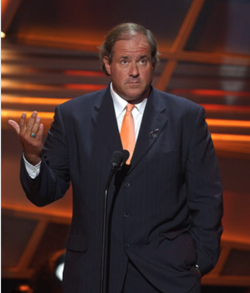

AI-generated Bermanisms

I started experimenting with LLMs in 2021, when I signed up for an OpenAI API key and began testing early GPT models like davinci and babbage. Since then, I have been using one benchmark on every new model that I can access: Can the AI produce good Bermanisms?
If you are not familiar, Chris "Boomer" Berman is a sportscaster who has been on ESPN since 1979. He is known for many things, but one of his most iconic contributions to American culture is the pun-based nicknames that he gives to professional athletes. The nickname never has anything to do with the sport or any characteristics of the athlete. It's all about the chuckle.
Here are some of my all-time favorite Berman-generated Bermanisms:
| Bermanism | League |
|---|---|
| Jeff "Brown Paper" Bagwell | MLB |
| Steve "Dorsal" Finley | MLB |
| Bert "Be Home" Blyleven | MLB |
| Ben "Winter" Coates | NFL |
| Carlos "1 if by Sea, 2 if by Land, 3 if" Baerga | MLB |
| Scott "Supercalifragalisticexpliala" Brosius | MLB |
| Andre "Bad Moon" Rison | NFL |
| Vince Workman "My Way Back to You Babe" | NFL |
| Sammy "Say it Ain't" Sosa | MLB |
| Roberto "Remember the " Alomar | MLB |
| Bernard "Innocent until proven" Gilkey | MLB |
I've been very impressed with many AI-generated language tasks that LLMs have produced in recent years, especially creative tasks like writing lyrics for songs and poetry. But it's been really bad at Bermanisms.
Here is the prompt I've been using:
Do you know what Bermanisms are? Here are some examples:
Jeff "Brown Paper" Bagwell
Mike Carreon "My Wayward Sun"
Steve "Dorsal" Finley
Bernard "Innocent until proven" Gilkey
Darryl "Green Eggs &" Hamilton
Jeff Conine "The Barbarian"
Carlos "1 if by Sea, 2 if by Land, 3 if" Baerga
Roberto "Remember the " Alomar
Jeff "See Through" Blauser
Scott "Supercalifragalisticexpliala" Brosius
Sammy "Say it Ain't" Sosa
Eddie "Eat Drink & Be" Murray
Bert "Be Home" Blyleven
Ben "Winter" Coates
Mike "You're in Good Hands with" Alstott
Jake "Daylight come and I wanna" Delhomme
Andre "Bad Moon" Rison
Vince Workman "My Way Back to You Babe"
Jeff "Philadelphia" Feagles
I want to see if you can creat some original Bermanisms. Come up with 40 original Bermanisms for current NFL players. Every time you generate one, go back and compare it to the examples I have given and verify that it is a legitimate Bermanism. No need to explain the logic, just list 40 Bermanisms without numbering or bullets.
ChatGPT 5.2 (Thinking) is horrible at this task. Here are some examples of its output:
| Patrick “Mahomes Is Where the Heart Is” Mahomes |
| Josh “Allen Town” Allen |
| Lamar “La-Mar-a-Lago” Jackson |
| Joe “Burrow My Sunshine” Burrow |
| Jalen “Hurts So Good” Hurts |
| Christian “McCaffreeyoncé” McCaffrey |
| Tyreek “Hill Street Blues” Hill |
| Travis “Kelce Lately” Kelce |
As you can see, these are bad. Some of them are clever, but they don't follow the logic of the many-shots (examples) that I provided. This is typical of LLM output over the years. But I always knew that it was possible for models to do better; that it was a matter of time before models could produce genuine Bermanisms.
Enter Anthropic's Opus 4.6 (released February 5, 2026). Here is it's response to my prompt:
| Jalen "Love" Hurts | CeeDee "Silence of the" Lamb |
|---|---|
| TJ "Kilo" Watt | Patrick "My Old Kentucky" Mahomes |
| Ja'Marr "Cut to the" Chase | Tyreek "Over the" Hill |
| Cooper "Stanley" Kupp | George "A Fine" Kittle |
| Davante "Gomez &" Adams | Kirk "Kissin'" Cousins |
| Jared "Blast" Goff | Breece "Deck the" Hall |
| Trey "Here Comes the" McBride | Maxx "Bing" Crosby |
| Derrick "O." Henry | Lamar "Action" Jackson |
| Kyle "Alexander" Hamilton | Jayden "Jack" Daniels |
| Malik "Good" Nabers | Mark "St." Andrews |
| Brock "Sit Up and Look" Purdy | Jordan "What is" Love |
| Deebo "Uncle" Samuel | Saquon "Charles" Barkley |
| Kenneth "Johnnie" Walker | Justin "George" Jefferson |
| Drake "Jack" London | Joe "Down the Rabbit" Burrow |
| Fred "Bros." Warner | Nico "Tom" Collins |
| Zack "A Rolling Stone Gathers No" Moss | Pat "That's for" Surtain |
| Sauce "Madison Square" Gardner | Chuba "Old Mother" Hubbard |
| Rachaad "Snow" White | Tyler "Davy Jones'" Lockett |
| Jerry "Judge" Jeudy | D'Andre "Taylor" Swift |
| Amari "Mini" Cooper | James "Captain" Cook |
These are much better. A lot of them are not good, but many of them genuinely made me laugh, as any good Bermanism should. I really loved Sauce "Madison Square" Gardner! Here are some more Opus gems that I've come across in other sessions:
| Zay "April Showers Bring May" Flowers |
| Cooper "Fill My" Kupp |
| Jordan "Whole Lotta" Love |
| Aidan "Starsky &" Hutchinson |
| Tank "Farmer in the" Dell |
| Brock "She Sure Looks" Purdy |
Next up is the latest major model to be released, Google Gemini 3.1 Pro (February 19, 2026). Gemini 3.1 Pro does somethings better than any other model, but one thing it can't do is freaking count (or at least follow instructions). It repeatedly fails to produce 40 Bermanisms (Opus had no trouble doing this). Anyway here are the "40" Bermanisms it produced in the latest run:
| Patrick "Take Me" Mahomes |
| Joe "Beg, Steal, or" Burrow |
| C.J. "Two's Company, Three's a" Stroud |
| Lamar "I'm Sorry Ms." Jackson |
| Josh "Up and" Allen |
| Justin "Movin' On Up" Jefferson |
| CeeDee "Mary Had a Little" Lamb |
| Tyreek "Over the" Hill |
| Breece "Deck the" Hall |
| De'Von "Ball and" Achane |
| D'Andre "Tailor" Swift |
| Cooper "Half Full" Kupp |
| Jared "Shake It" Goff |
| T.J. "Turn Down For" Watt |
| Myles "To Go Before I Sleep" Garrett |
| Fred "Pop" Warner |
| Aidan "Starsky and" Hutchinson |
I haven't been seeing a lot of overlap in the outputs, but Opus and Gemini 3.1 Pro consistently produce Aidan "Starsky and" Hutchinson. Of these Gemini Bermanisms, my favorite is C.J. "Two's Company, Three's a" Stroud. I also really like Myles "To Go Before I Sleep" Garrett. Here are some other Bermanisms from previous sessions with Gemini 3.1 Pro that made me laugh:
| Brock "I Feel" Purdy |
| Chris "Extra Virgin" Olave |
| Cooper "Peanut Butter" Kupp |
| Jalen "Everybody" Hurts |
| George "Slim" Pickens |
| Saquon "All Bite No" Barkley |
| Patrick "Lights Are On But Nobody's" Mahomes |
| Jared "Take a Load" Goff |
| Jared "Turn Your Head and" Goff |
| Kyle "Bottomless" Pitts |
I don't hold it against the models that they still have so many misfires. I'm sure Berman (and his writers) toss plenty of potential Bermanisms in the waste paper basket and we only see the cream of the crop on TV.
I'll follow up this post with new experiments when the next generation of models is released (at this rate, probably next week!).
One last note on the topic of Bermanisms. I have a friend that is very good at creating Bermanisms and likes to create them for many of his work colleagues. So if you would like to be as unpopular as this guy is around the office, I suggest that you try using an LLM to Bermanize people at your workplace!
Update: March 6, 2026
GPT 5.4 (the best new model for the moment) came out yesterday so I had to try it out. Overall, OpenAI is still worse than Gemini and Anthropic at making Bermanisms, but 5.4 is definitely better than GPT 5.2. It produced lots of really bad ones and it tends to rely too much on single-word nicknames. But here are some of the best ones that it produced:
| Patrick “Go Big or Go” Mahomes |
| George “Little by” Kittle |
| Pat “For” Surtain |
| T.J. “Guess” Watt |
| De’Von “No Pain, No” Achane |
| Christian “Elementary, My Dear” Watson |
| Brian “Disco Inferno, Burn Baby” Burns |
| Ja’Marr “The Thrill of the” Chase |
| Khalil “Salt” Shakir |
| Woody “On Your” Marks |
| Aidan “Starsky and” Hutchinson (YET AGAIN) |